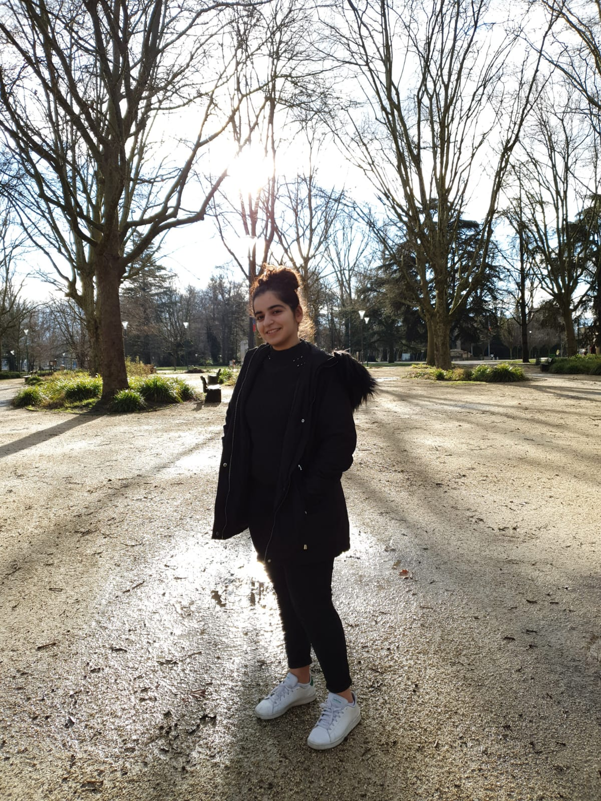

Pris dans la tourmente du coup d’État de Pinochet en 1973, Patricio et Nivia, membres de la résistance MIR, fuirent leur pays avec leurs enfants afin de rejoindre la France pour plus de sécurité. Des années plus tard, Nivia et sa fille décidèrent de lutter en France pour transmettre la mémoire des femmes chiliennes, c'est pourquoi mère et fille, complémentaires, de générations différentes, décidèrent d’agir ensemble afin de partager leurs vécus et d’émanciper leurs histoires. D’une part pour soigner leurs chagrins et celui de leurs semblables et d’autre part dans le but de raviver l’histoire.
SYNOPSIS
SYNOPSIS & NOTE D'INTENTION
NOTE D'INTENTION
Cette année, le thème de "la mémoire" nous a été imposé et suivant cela nous avons décidé de travailler sur "le féminicide" qui est un thème d’actualité et auquel nous en sommes sensibles, cependant nous avons finalement décidé de nous diriger sur un autre thème après avoir discuté avec notre réalisatrice Mme Jeanne Coudurier. Nous avons dû changer de thème puisque il était quasiment impossible de trouver des témoignages de femmes victimes de féminicide. C’est pourquoi nous avons contacté Nivia Alarcón avec qui nous avons eu un projet avec elle auparavant et nous avons décidé d'orienter notre projet sur les femmes dans le cadre de "la résistance", car cela nous permettrait de conserver notre désir de travailler sur le thème de "la femme".
Pour aboutir à nos fins, nous avons contacté en premier lieu la famille Alarcón qui sera notre protagoniste. Ensuite nous avons fixé un premier rendez-vous afin de parler de notre projet et connaître un peu plus leur histoire. Suite à cela, nous avons fixé un autre rendez-vous pour assister à l’atelier des "Arpilleras", et participer par la suite à l’inauguration des Arpilleras. Enfin, nous avons terminé par une visite à l’atelier de la fille, Antonieta. En ce qui concerne la mise en place, c'est-à-dire les rendez-vous, la participation aux ateliers et à l’inauguration, on a pu les faire sans avoir de problème, malheureusement suite à la pandémie du coronavirus, notre projet n’a pu être abouti car nous avons voulu finaliser le projet avec une interview de la mère et de la fille.
Notre film documentaire est dédié avant tout aux rôles des femmes ayant participé à la résistance MIR, au Chili, et plus particulièrement centré sur la famille Alarcón. Nonobstant, nous verrons au fil du documentaire l’évolution des rôles des femmes et de leur engagement.
Les protagonistes sont donc des membres d'une famille chilienne qui ont fuit le coup d’état de Pinochet. Nous nous sommes centrées sur la mère et la fille, Nivia Alarcón et Antonieta Pardo qui ont créé des ateliers afin de faire perdurer la mémoire. Nivia, fondatrice de l’atelier des Arpilleras a voulu transmettre ses savoirs en terme de couture, afin de permettre à d’autres femmes de s’exprimer et de se livrer enfin sur des Arpilleras. Quant à Antonieta, en plus de soutenir l'engagement de sa mère elle participe à ses démarches. C'est une femme très engagée, elle a fondé l'association "Les droits de l’Homme" et dans son atelier “Utopia”, elle crée ses propres oeuvres.
Nous avons assisté à l'atelier de création des Arpilleras, où nous avons pu faire la rencontre de plusieurs autres femmes qui ont chacune une histoire personnelle à transmettre et nous avons été très touchées par leur dévouement à cette transmission de mémoire et à cette part de résistance qui est ancrée en elles. Cet atelier est aussi un lieu de regroupement où la famille Alarcón travaille ensemble afin de transmettre leurs vécus difficiles et empêcher que ça ne se reproduisent dans d'autres pays.
Nous avons également assisté à l'inauguration de l'exposition des Arpilleras, où ces femmes ont pu exposer leurs travaux et partager leurs histoires. Cette inauguration a surtout permis la dénonciation de la répression qui se passe actuellement au Chili grâce à une Arpillera commune.
Enfin, notre dernier rendez-vous s'était tenu dans l'atelier Utopia, lieu de travail et de création d'Antonieta. Elle nous a expliqué en quoi consistait son travail, et ce qu'elle dénonçait
Le film documentaire comporte des points d’actualité basés sur la vie des femmes qui ont participé à la résistance ou encore ayant eu un rôle dans la politique. La mémoire est l’un des thèmes principaux abordé, car les femmes qui y participent veulent faire perdurer la mémoire afin que tout le monde soit informé de la répression vécu et que celle-ci ne recommence plus.
Les difficultés de ce tournage ont été dû à un temps limité et surtout pour l’inauguration car à ce moment-là nous avions cours. Nous avons eu également des difficultés pour le tournage, car c'était notre première expérience et nous ne savions pas réellement filmer, de plus à l’inauguration il y avait beaucoup de personnes et nous n'avions pas pu prévoir leurs mouvements.
Les matériaux dont nous disposions pour filmer et pour enregistrer le son sont: deux téléphones, un pour le son et un pour l'image.
En ce qui concerne le montage nous avons utilisé le logiciel : Filmora.
ARPILLERAS
MÉMOIRE & RÉSISTANCE


HISTOIRE DES ARPILLERAS
Les Arpilleras sont des petits tableaux en textiles et en trois dimensions, qui donnent vie à des petits personnages. Des histoires de vie qui tiennent dans des petits tissus soigneusement découpés et cousus avec délicatesse.
C’est la folkloriste chilienne Violeta Parra qui en 1959, suite à un alitement prolongé pour cause de maladie, à réaliser les Arpilleras inspirées de l’Art Naïf. Elles seront exposées notamment au Louvre en 1964, elle sera la première femme à exposer seule. Violeta Parra dira des Arpilleras: “ c’est comme des chansons que l’on peint.” Peu après cette date, une brodeuse du nom de Leonor Sobrino arrive à isla negra (Chili), et organise les premiers ateliers.
Le Cardinal Raúl de Santiago cherche des solutions pour aider ou soulager les proches des détenu(e)(s) ou disparu(e)(s) de leurs tristesses. Il s’adresse alors à l’avocate de Vicariat de la Solidarité Gloria Torres qui propose l’intervention d’une artiste, Valentina Bonnet. Elle proposera la création de tableaux en tissus pour “Raconter”, “Extérioriser”. Le premier atelier d’Arpilleras Politique voient le jour en 1974 sous l’impulsion et la protection du Comité Pro Paz.
Les Arpilleras étaient donc des passeurs de messages, des objets qui pouvaient révéler les attentes, l’amour, les violences, les peurs.
CAHIER DE BORD

Etape 1 : Réflexion et Mise en Contact
Etape 2 : Entretient


Etape 3 : Atelier
Etape 4 : Inauguration
Etape 5: Utopia
Etape 6: Crise Sanitaire

Anissa LAJILI
22 ans
LLCER Espagnol
En charge : Sénario, Production, Photographie, Voix-Off.
J'ai été très contente de faire ce projet, car cela m’a aidé à mettre en profit mon esprit créatif dans un système scolaire qui ne nous permet pas souvent de le faire.
Cela a été, une expérience très enrichissante tant au niveau personnel que social et qui m’a permise de découvrir des facultés que je ne connaissais pas de ma personnalité.
...Lire plusMerve TOSUN
22 ans
LLCER Espagnol
En charge : Sénario, Production, Potographie, Montage.
J'ai été très enchantée de vivre cette expérience, car elle a été très enrichissante pour moi.
Grâce à cette création documentaire, j'ai pu découvrir une partie du monde du cinéma.
Cette expérience a été à la fois stressante, contrariante et amusantes. Nous avons vécu des hauts et des bas, mais j'en ai gardé un très bon souvenir en moi.
...Lire plus
Manel MOKHTARI
25 ans
LLCER Espagnol
En charge : Sénario, Production, Sous-titrage, Élaboration du site web.
J'ai été très ravie de faire ce projet, car il m'a été très bénéfique et enrichissant, il m’a permis de faire appel à un esprit créatif, de vivre le métier de cinéaste et de réalisateur et de découvrir par la même occasion, les conditions afin de réaliser un film documentaire.
Réaliser ce documentaire n’a pas été chose simple, car il nous a fallu beaucoup de patience. Mais malgré les difficultés rencontrées, qui sont parfois inattendues, et qui nous poussent à nous adapter et à trouver des solutions, cela reste une très belle expérience.
...Lire plusQUI SOMMES NOUS? :
- Études : 3ème année Licence, Littérature et Civilisation Etrangères Espagnol (LLCER)
- Université : UFR de Grenoble
- Projet : film documentaire sur le thème de la mémoire en relation avec le monde hispanique
- Thème : résistance des femmes à travers les Arpilleras
- But : continuer à transmettre la mémoire de ces femmes et mettre en garde de ce qui se passe dans le monde
Fiche Technique
Titre original : Resistencia
Année de production : 2020
Type de film : Film documentaire
Langues : Version française avec sous-titres espagnol
Lieu de tournage : Grenoble
Scénario
Sénariste : Lajili Anissa
Sénariste : Tosun Merve
Sénariste : Mokhtari Manel
Soundtrack
Musique : Butterfiles Piano Sonata
Voix-Off : Lajili Anissa
Production
Producteur : AMM Group
Productrice : Lajili Anissa
Productrice : Tosun Merve
Productrice : Mokhtari Manel
Équipe Technique
Directeur de la Photographie : Tosun Merve et Lajili Anissa
Monteur : Tosun Merve
Sous-titrage : Mokhtari Manel
Matériel utilisé : Portable
Site Web : Mokhtari Manel

{kind=link}
{kind=link}